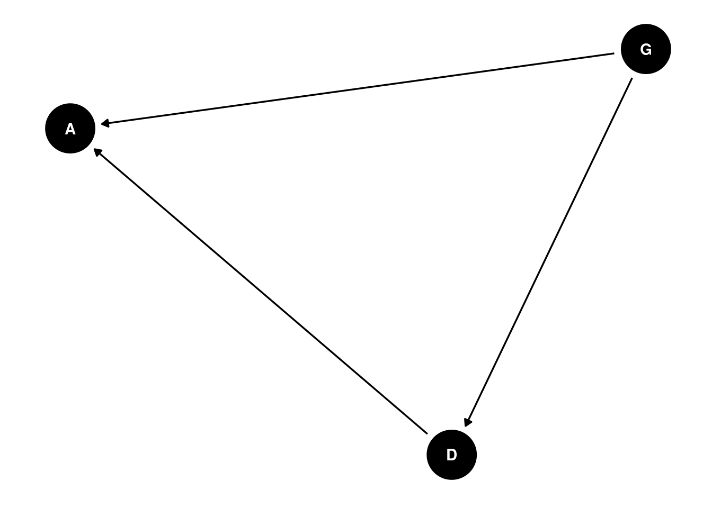
Homework - Week 05
Question 1: The data in data(NWOGrants) are outcomes for scientific funding applications for the Netherlands Organization for Scientific Research (NWO) from 2010–2012 (see van der Lee and Ellemers doi:10.1073/pnas.1510159112). These data have a structure similar to the UCBAdmit data discussed in Chapter 11 and in lecture. There are applications and each has an associated gender (of the lead researcher). But instead of departments, there are disciplines. Draw a DAG for this sample. Then use the backdoor criterion and a binomial GLM to estimate the TOTAL causal effect of gender on grant awards.
Where G = gender, D = discipline, and A = awards. We assume there are confounds between D and A. To get the total effect of gender, we model awards stratified by gender.
data("NWOGrants")
df <- NWOGrants %>%
mutate(awards = as.integer(awards),
applications = as.integer(applications),
discipline = as.factor(as.integer(discipline)),
gender = as.factor(case_when(gender == 'f' ~ 1,
gender == 'm' ~ 2)))
# load prior only model to investigate priors
tar_load(h05_q1_prior)
m1p<- h05_q1_prior
m1p$prior prior class coef group resp dpar nlpar lb ub source
normal(-1, 1) b user
normal(-1, 1) b gender2 (vectorized)
normal(-1, 1) Intercept userplot(m1p)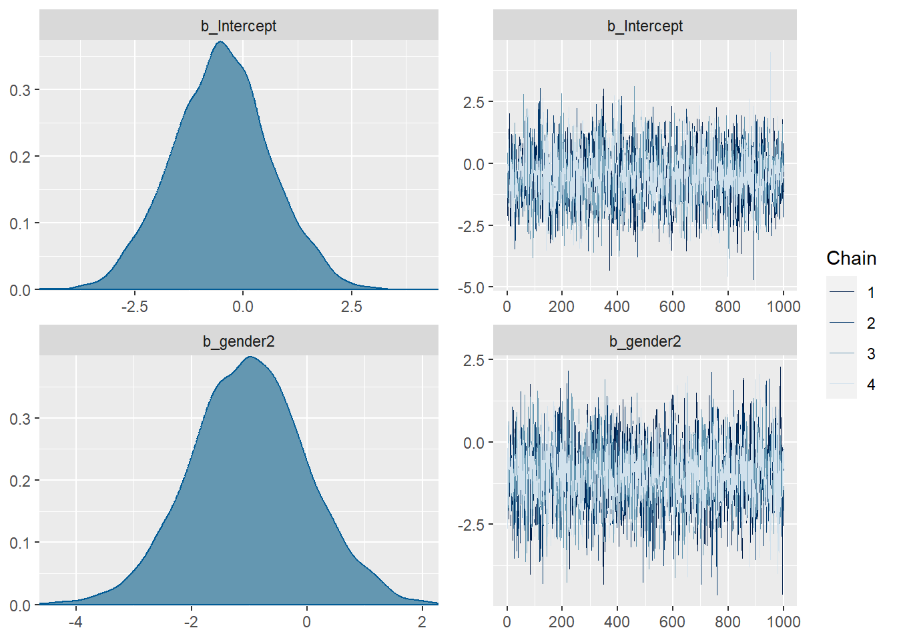
# get posterior distribution
post <- as_draws_df(m1p)
# transform logit values back to probability
post <- post %>%
mutate(p_int = inv_logit(b_Intercept),
p_gen = inv_logit(b_gender2))
# look at prior for intercept
ggplot(post, aes(p_int)) +
geom_density() +
theme_classic()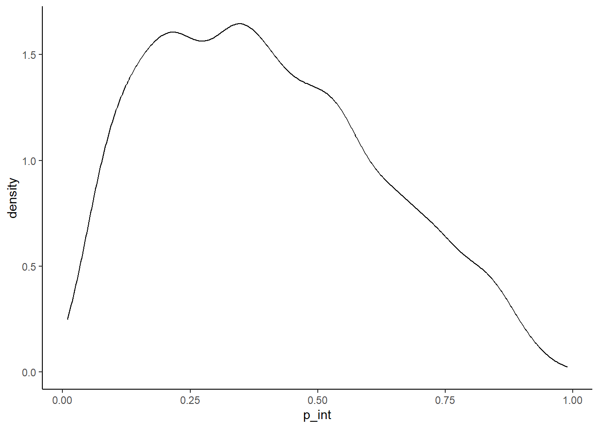
# look at prior for gender
ggplot(post, aes(p_gen)) +
geom_density() +
theme_classic()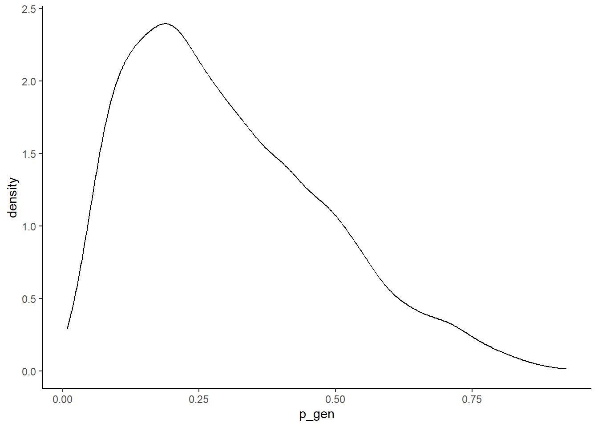
Now let’s investigate the model with the data:
tar_load(h05_q1)
m1<- h05_q1
# diagnostics
plot(m1)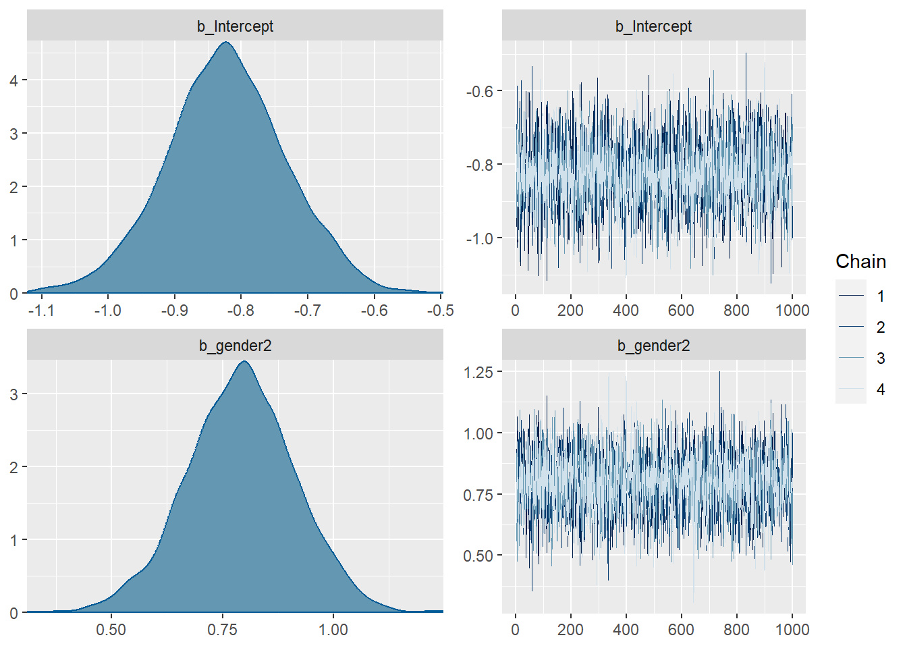
conditional_effects(m1)Setting all 'trials' variables to 1 by default if not specified otherwise.
# summary table (logit)
posterior_summary(m1) Estimate Est.Error Q2.5 Q97.5
b_Intercept -1.7360854 0.08084481 -1.895110674 -1.5847487
b_gender2 0.1977248 0.10142669 -0.003809679 0.3934985
lprior -2.7647172 0.13333272 -3.036665579 -2.5194333
lp__ -64.8898356 0.99441404 -67.600901653 -63.9137578# use model to predict values for each gender individually
# adds draws from (possibly transformed) posterior linear predictors (or "link-level" predictors) to the data.
t <- df %>%
data_grid(gender, applications) %>%
add_linpred_draws(m1) %>%
ungroup() %>%
select(-.row) %>%
spread(gender, .linpred) %>%
rename(female = '1',
male = '2') %>%
mutate(contrast = inv_logit_scaled(female) - inv_logit_scaled(male))
ggplot(t, aes(contrast)) +
geom_density() +
theme_classic() +
labs(x = "Contrast (F-M) total")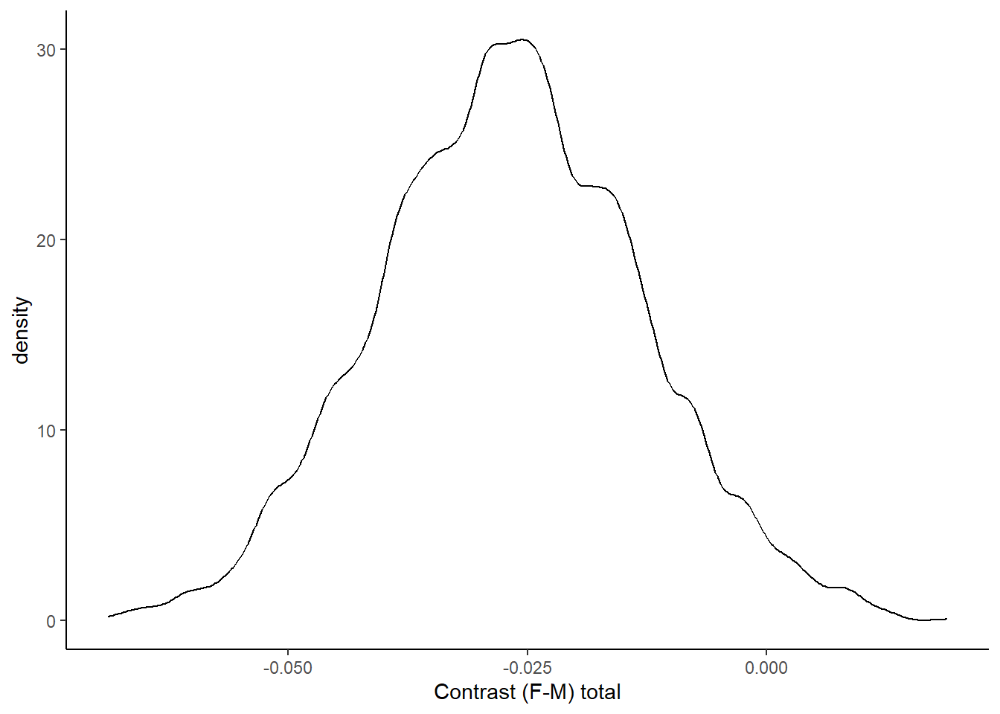
This shows approximately 2.5-3% disadvantage against women.
Question 2: Now estimate the DIRECT causal effect of gender on grant awards. Use the same DAG as above to justify one or more binomial models. Compute the average direct causal effect of gender, weighting each discipline in proportion to the number of
applications in the sample. Refer to the marginal effect example in Lecture 9 for help.
The direct causal effect of gender requires us to stratify by discipline as well:
tar_load(h05_q2)
m2 <- h05_q2
# diagnostics
plot(m2)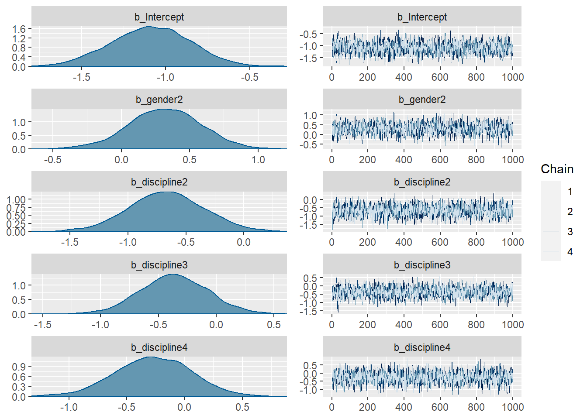
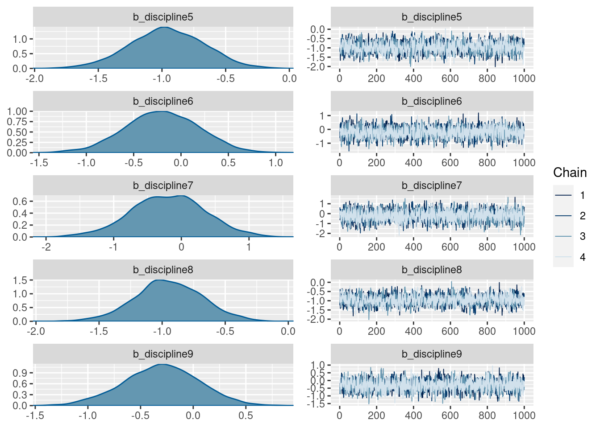
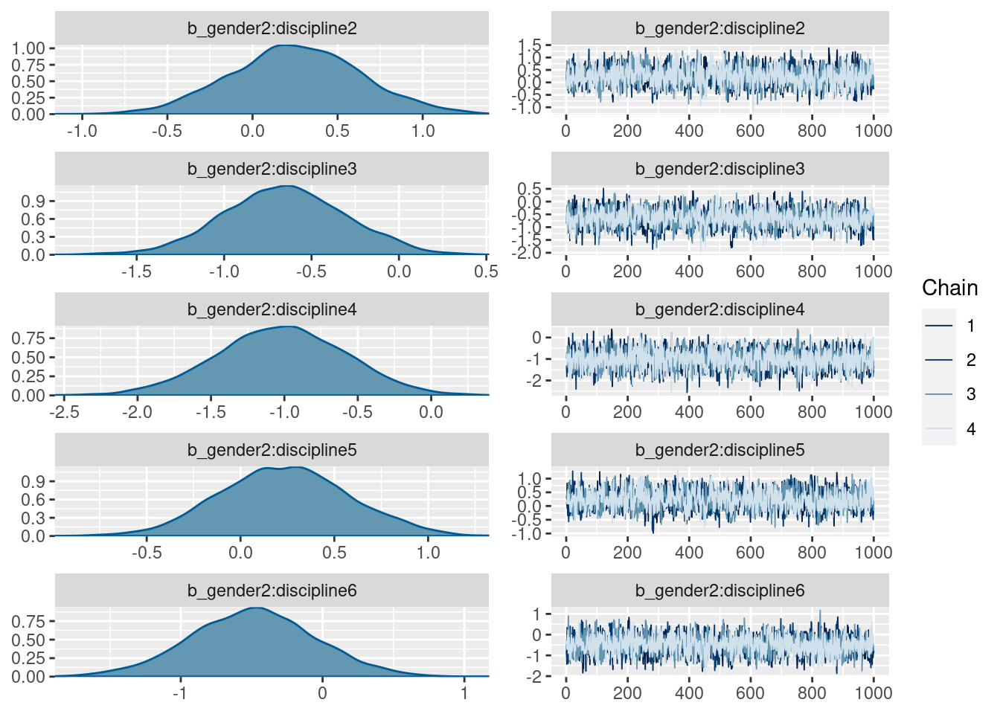
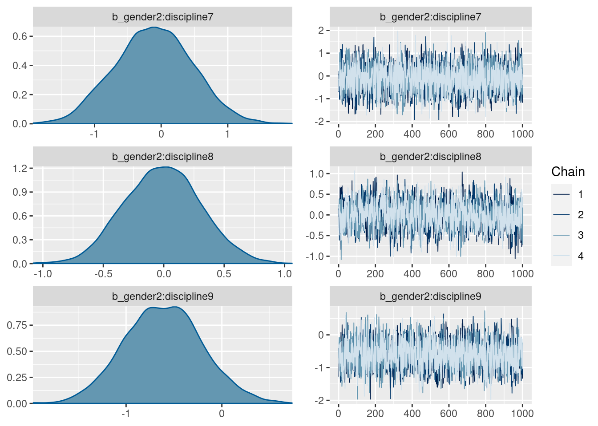
# summary table (logit)
posterior_summary(m2) Estimate Est.Error Q2.5 Q97.5
b_Intercept -1.08916852 0.2321708 -1.5472449 -6.446542e-01
b_gender2 0.31807748 0.2622164 -0.2122169 8.302995e-01
b_discipline2 -0.66852157 0.3206118 -1.2906439 -4.331076e-02
b_discipline3 -0.36361403 0.2921276 -0.9262881 2.163703e-01
b_discipline4 -0.27037303 0.3296643 -0.9273744 3.550838e-01
b_discipline5 -0.95636591 0.2900080 -1.5086518 -3.796808e-01
b_discipline6 -0.17991066 0.3977730 -0.9802213 5.637761e-01
b_discipline7 -0.18012967 0.5624323 -1.3039927 8.828957e-01
b_discipline8 -0.93895603 0.2708121 -1.4639436 -4.030828e-01
b_discipline9 -0.29017909 0.3567557 -0.9958118 3.987583e-01
b_gender2:discipline2 0.25661678 0.3748470 -0.4641953 1.000714e+00
b_gender2:discipline3 -0.67792514 0.3516304 -1.3710119 4.594452e-05
b_gender2:discipline4 -1.03164339 0.4330488 -1.8812883 -1.827009e-01
b_gender2:discipline5 0.21784082 0.3461980 -0.4550456 8.927343e-01
b_gender2:discipline6 -0.52034230 0.4488518 -1.3813462 3.860632e-01
b_gender2:discipline7 -0.13567909 0.5863208 -1.2873476 1.036001e+00
b_gender2:discipline8 -0.02141044 0.3252919 -0.6658650 6.178296e-01
b_gender2:discipline9 -0.63238008 0.4127721 -1.4441915 1.592195e-01
lprior -22.86412838 1.2830461 -25.7406533 -2.074418e+01
lp__ -73.47038277 2.9541246 -80.1294901 -6.879286e+01# plot effects
conditional_effects(m2)Setting all 'trials' variables to 1 by default if not specified otherwise.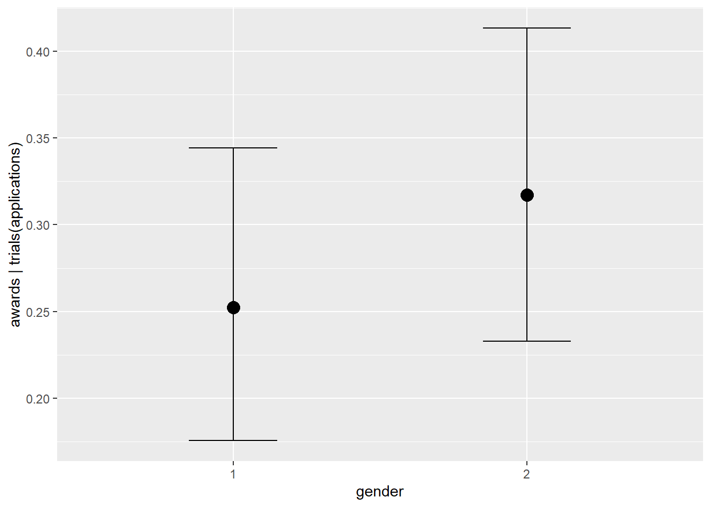
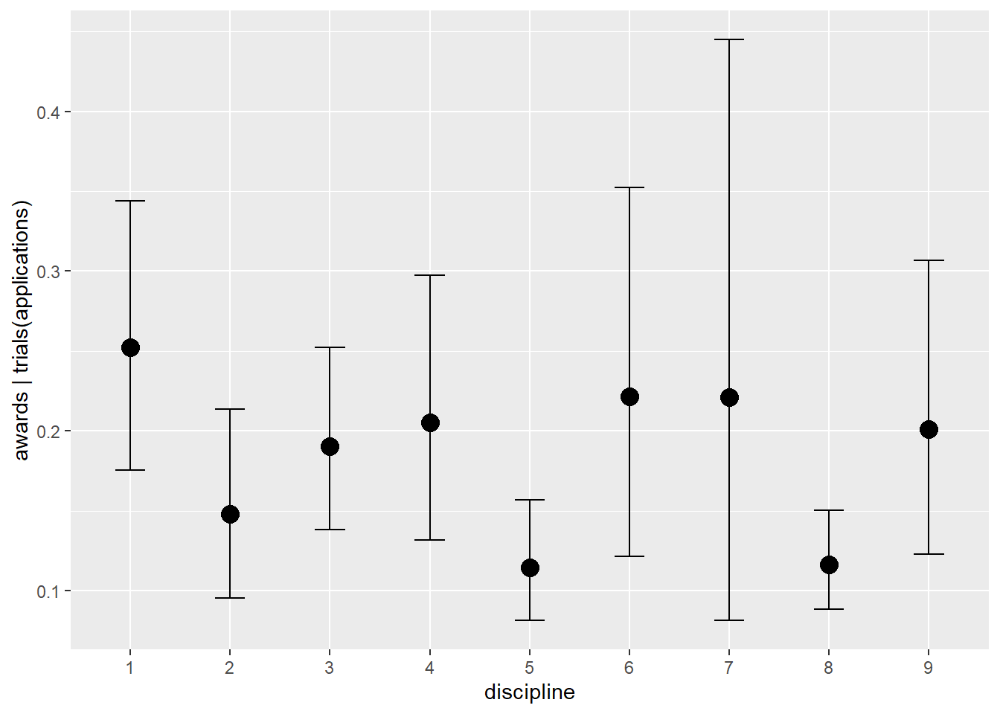
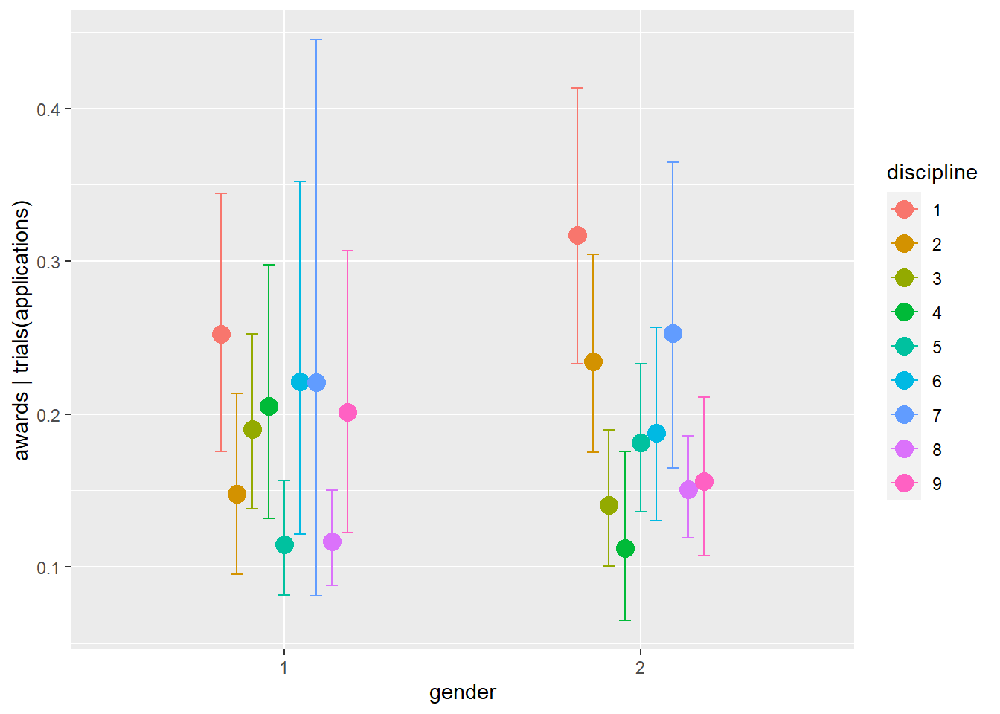
## Model each department independently and contrast
dmod <- lapply(1:9, function(x) {
tf <- tibble(discipline = x,
applications = 1,
gender = 1) %>%
select(discipline, applications, gender)
tm <- tibble(discipline = x,
applications = 1,
gender = 2) %>%
select(discipline, applications, gender)
pred_dept_female <- linpred_draws(m2, tf) %>%
mutate(ppred = inv_logit(.linpred))
pred_dept_male <- linpred_draws(m2, tm) %>%
mutate(ppred = inv_logit(.linpred))
c <- tibble(discipline = x,
ppred = pred_dept_female$ppred - pred_dept_male$ppred)
return(c)
})
dmod_df <- as.data.frame(do.call(rbind, dmod))
ggplot(dmod_df, aes(x = ppred, colour = as.factor(discipline))) +
geom_density() +
theme_classic() +
labs(x = "Gender contrast (F-M) by department", colour = "Discipline")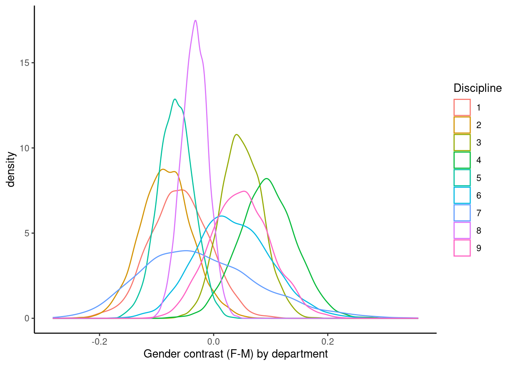
### Simulate
apps_per_dept <- df %>%
group_by(discipline) %>%
summarize(applications = sum(applications))
# simulate as if all applications are from males
dff <- apps_per_dept %>%
mutate(gender = 1) %>%
uncount(applications) %>%
mutate(applications = 1L)
# simulate as if all applications are from females
dfm <- apps_per_dept %>%
mutate(gender = 2) %>%
uncount(applications) %>%
mutate(applications = 1L)
marg_eff <- bind_rows(add_epred_draws(dff, m2),
add_epred_draws(dfm, m2)) %>%
pivot_wider(names_from = "gender", values_from = ".epred") %>%
rename(female = "1",
male = "2") %>%
mutate(contrast = female - male)
ggplot(marg_eff, aes(contrast)) +
geom_density() +
theme_classic() +
labs(x = "Contrast F-M (marginal)")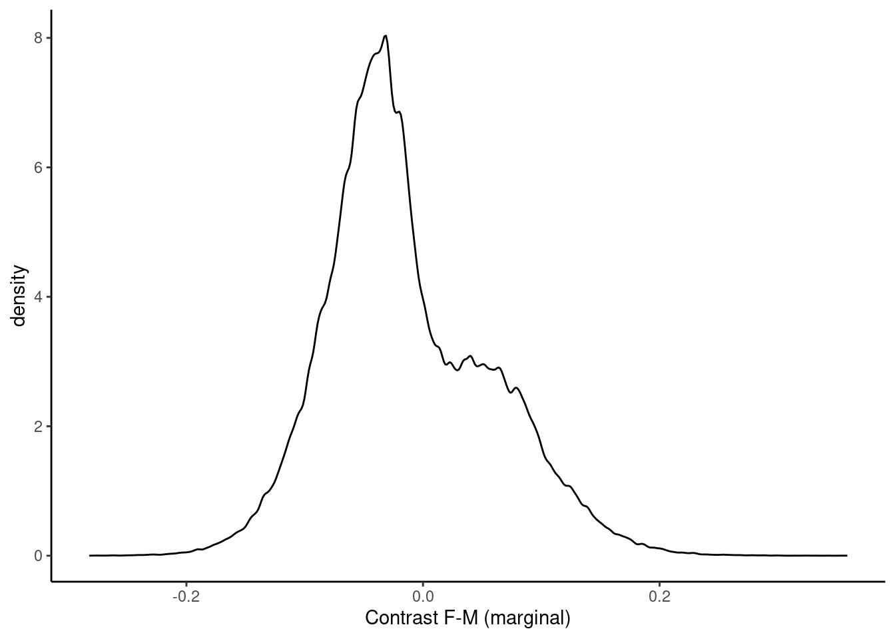
Effect size and direction varies widely across departments - leading to a direct effect of gender having a very wide spread, with most of the density showing a disadvantage towards women but some notable exceptions.
Question 3: Considering the total effect (problem 1) and direct effect (problem 2) of gender, what causes contribute to the average difference between women and men in award rate in this sample? It is not necessary to say whether or not there is evidence of discrimination or the presence or absence of unobserved confounds (which are likely!). Simply explain how the direct effects you have estimated make sense (or not) of the total effect.
We see that gender has a total effect of ~ 3% discrimination, and the model also shows that there is an effect of department - so the effect of gender acting through department is also important. We can plot this:
# calculate percent of each discipline that is male/female
t <- df %>%
mutate(total_f = sum(applications[gender == 1]),
total_m = sum(applications[gender == 2])) %>%
group_by(discipline) %>%
summarize(pDF = sum(applications[gender == 1])/total_f,
pDM = sum(applications[gender == 2])/total_m,
nApp = sum(applications),
nAwa = sum(awards),
pAwa = nAwa/nApp) %>%
unique()Warning: Returning more (or less) than 1 row per `summarise()` group was deprecated in
dplyr 1.1.0.
ℹ Please use `reframe()` instead.
ℹ When switching from `summarise()` to `reframe()`, remember that `reframe()`
always returns an ungrouped data frame and adjust accordingly.`summarise()` has grouped output by 'discipline'. You can override using the
`.groups` argument.post <- df %>%
data_grid(gender, discipline, applications) %>%
add_linpred_draws(m2) %>%
ungroup() %>%
select(-.row) %>%
spread(gender, .linpred) %>%
rename(female = '1',
male = '2') %>%
group_by(discipline) %>%
summarize(mean_pFA = mean(inv_logit_scaled(female)),
mean_pMA = mean(inv_logit_scaled(male))) %>%
mutate(award_dominant = if_else(mean_pMA > mean_pFA, "male", "female")) %>%
select(-discipline)
full <- cbind(t, post)
ggplot(full) +
geom_point(aes(x = pDF, y = pDM, colour = award_dominant)) +
geom_abline(intercept = 0, slope = 1) +
geom_text(aes(x = pDF, y = pDM, label = round(pAwa, 2)), check_overlap = T) +
theme_classic()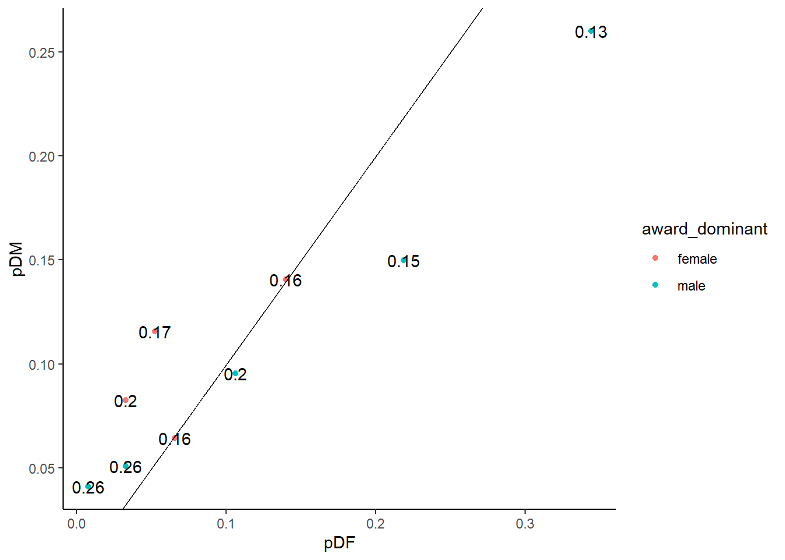
Below the line, there relatively larger proportion of women applied to the disciplines below the diagonal line. Numbers represent award success rates. Colours correspond to which gender receives more awards.